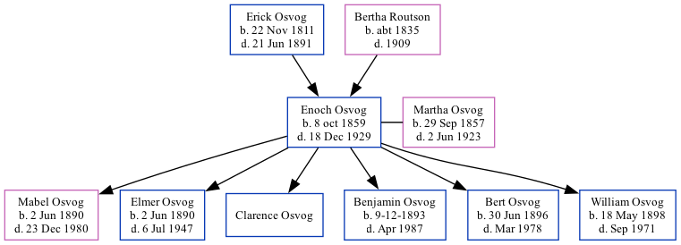

Enoch E Osvog 1859 - 1929
[ Home ] | [ Surnames Index ] | [ Family History ]The child of Erick Osvog and Bertha Routson, , Enoch was the three times great-uncle of Stephanie Hardesty (née Teten), was born in Iowa on Oct 8, 18591,2 and married Martha Osvog (with whom he had 6 children: Mabel C, Elmer Daniel, Clarence A, Benjamin Harry, Bert Oliver and William S) in 1889.
During his life, he was living in Palestine, Story, Iowa, USA in 18801; and in Donna, Hidalgo, Texas in 19202.
He died on Dec 18, 1929 in Hand, South Dakota.
Parents
- Erick was born on Nov 22, 1811
- Bertha was born c. 1835
Children
- Mabel C was born on Jun 2, 1890
- Elmer Daniel was born on Jun 2, 1890
- Clarence A
- Benjamin Harry was born from 9-12 to 1893
- Bert Oliver was born on Jun 30, 1896
- William S was born on May 18, 1898
Citations
- 1880 United States Federal Census Ancestry.com Operations Inc (Age: 20; Marital Status: Single; Relation to Head of House: Son)
- 1920 United States Federal Census Ancestry.com Operations Inc (Age: 60; Marital Status: Married; Relation to Head of House: Head)
Family Tree
Data (GEDCOM) maintained by Jay Weston Hannah, Omaha, Nebraska, USA.
Website generated by ged2site. Last updated on Jun 18, 2024.